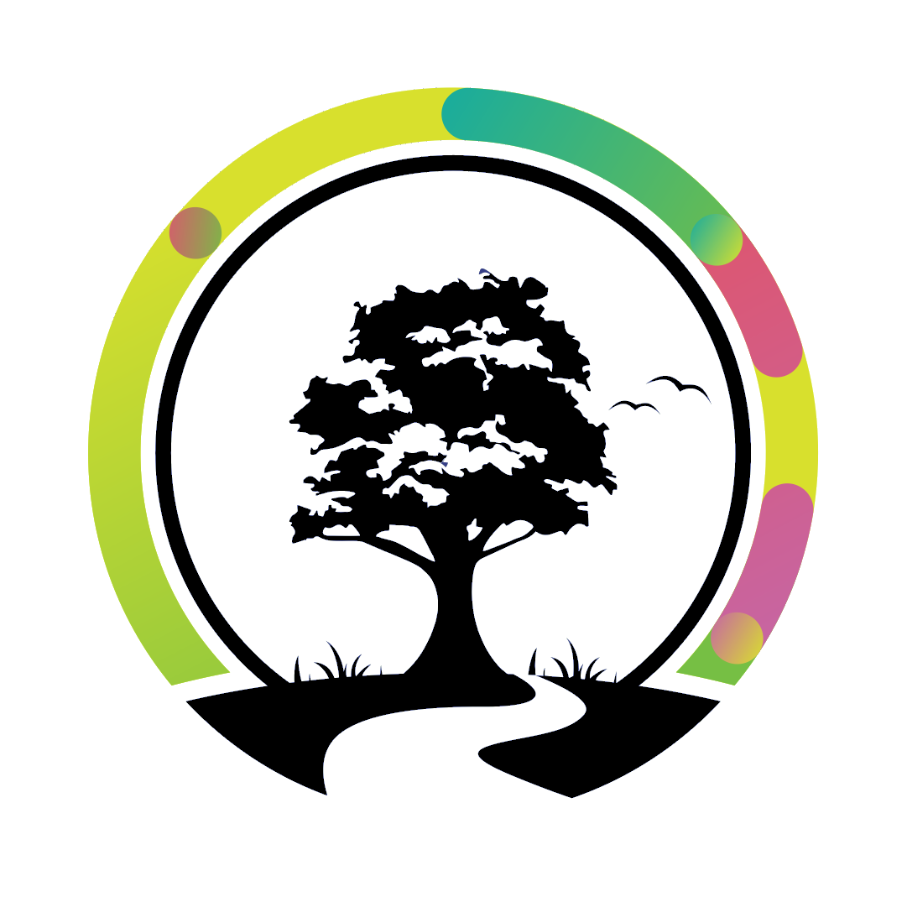

Scăpați de oraș și relaxați-vă în pădure


Despre noi
Centrul de Instruire şi Agrement Ivancea este situat într-o zonă foarte pitorească în inima Codrilor
Moldovei, la 30 km distanţa de Chişinău. Centrul dispune de 2 blocuri hoteliere, restaurant, săli de
conferinţă, terenuri sportive şi foişoare în aer liber. Este o locaţie perfectă pentru evenimente de
familie, escapade de weekend, team building şi întâlniri de afaceri.
Zona de agrement Inima Codrilor
Activi în atmosferă de pădure
Pentru activităţi de relaxare şi petrecere a timpului liber, pe teritoriul complexului sunt amplasate 3
terenuri sportive: de fotbal, baschet şi volei. Pe lângă activităţi sportive, pe teritoriul complexului sunt
situate 7 foişoare cu o capacitate totală de 272 locuri unde pot fi desfăşurate cu succes evenimente
profesionale sau de familie, în aer liber.
Te așteptăm la noi!